O levantamento das informações das estatais estaduais teve início no exercício de 2019. Até 2023, a publicação se restringia à apresentação dos dados do exercício avaliado. Desde o ano passado (sexta edição), o Raio-X das Estatais Estaduais ganhou um novo formato, passando a apresentar também gráficos comparativos de exercícios anteriores. Essa comparação tem início na base de dados de 2021, em razão de mudanças metodológicas ocorridas no período inicial.
Os dados aqui disponibilizados foram declarados pelos Estados; portanto, a precisão e a correção das informações consolidadas são de inteira responsabilidade deles. A STN realizou apenas um pequeno ajuste nos dados relativos aos setores das estatais. Assim, algumas empresas inicialmente classificadas como “outros setores” foram realocadas em segmentos mais adequados.
Você pode consultar, ao final desta página, os links das versões anteriores e da base de dados.
Espera-se que essas informações permitam aos cidadãos avaliar as vantagens de um Estado empreendedor, cobrar resultados e fiscalizar as ações dos governos e de suas empresas, compreendendo que o objetivo das estatais é prestar serviços de relevante interesse coletivo à população.
As informações estão organizadas em cinco partes:
- Com quantas estatais se faz um Estado — apresenta o quantitativo de estatais por Região/Estado, informa o total de empresas dependentes e não dependentes e seus respectivos segmentos;
- O Estado empreendedor — mostra o lucro/prejuízo dessas empresas e apresenta um ranking de suas respectivas rentabilidades;
- O Estado administrador — relaciona aspectos de governança, como a presença de conselhos e comitês, com os resultados das estatais;
- O Estado acionista — apresenta o impacto financeiro líquido das empresas controladas nas finanças públicas estaduais; e
- Indícios de dependência — aborda situações de estatais classificadas pelos Estados como não dependentes, mas que apresentaram indícios de dependência.
No gráfico abaixo, apresenta-se a distribuição (frequência) de estatais por setor e situação de dependência, em que cada círculo representa uma empresa estatal. Ao clicar sobre os círculos, são exibidas informações como Estado, nome da empresa, dependência, situação, capital social, investimentos realizados, lucros/prejuízos apurados e o link para a carta anual de políticas públicas da empresa. Além disso, é possível selecionar um Estado para visualizar apenas as empresas a ele vinculadas.
Entender quantas estatais existem em cada Estado é essencial para conhecer a capacidade dessas instituições de entregarem serviços aos cidadãos. Também é importante compreender como o dinheiro público está sendo utilizado e avaliar a saúde financeira dos governos. As empresas dependentes funcionam com repasses do Tesouro e têm impacto direto nas contas públicas. Por isso, é fundamental que haja transparência: ela permite que qualquer cidadão acompanhe, de forma clara e responsável, como os recursos estão sendo administrados pelo poder público.
Ficha básica das empresas por setor
- Dependentes
- Não Dependentes
- Não Dependentes, com indícios de dependência
Clique nos círculos para exibir mais detalhes das empresas.
Empresa
Empresa não dependente, mas com indícios de dependência por ter recebido subvenções do ente controladorreforço de capital do ente controlador, sem que o Capital Social declarado pela empresa tenha se alterado em relação ao exercício anterior.
Situação:
Capital Social:
Investimento realizado:
Lucros/Prejuízos:
Com quantas estatais se faz um Estado?
Conforme os dados informados no SICONFI (Sistema de Informações Contábeis e Fiscais do Setor Público Brasileiro), no exercício de 2024 havia 298 empresas controladas pelos Estados, das quais 263 estavam em situação ativa e 36 em fase de liquidação.
Em 2024, os entes informaram três estatais a mais do que em 2023. Embora duas empresas de São Paulo tenham deixado de ser reportadas, outras cinco passaram a constar: duas do Piauí, além de uma empresa do Distrito Federal, uma do Espírito Santo e uma de Goiás.
A quantidade de estatais que cada Estado possui varia bastante, o Distrito Federal possui 26 empresas, seguido pelo Rio de Janeiro, com 22, e Santa Catarina e Goiás, com 16. Em quarto lugar encontram-se Pernambuco, Paraíba Minas Gerais, com 15 estatais cada. Já os Estados com a menor quantidade de estatais são Amapá e Tocantins, com três cada, seguidos de Roraima e Maranhão, com cinco cada.
O gráfico abaixo mostra a quantidade de estatais por Estado, separadas entre dependentes e não dependentes. Em termos relativos, 43% das empresas declaradas pelos Estados são dependentes — ou seja, 127 do total de 298 — proporção semelhante à do exercício anterior. O número de estatais por Estado varia de 3 a 26, sendo que o Acre possui apenas empresas dependentes, enquanto Maranhão, Rondônia, Rio Grande do Sul e Tocantins possuem apenas empresas não dependentes.
Quantidade de empresas por Estado
- Dependentes
- Não Dependentes
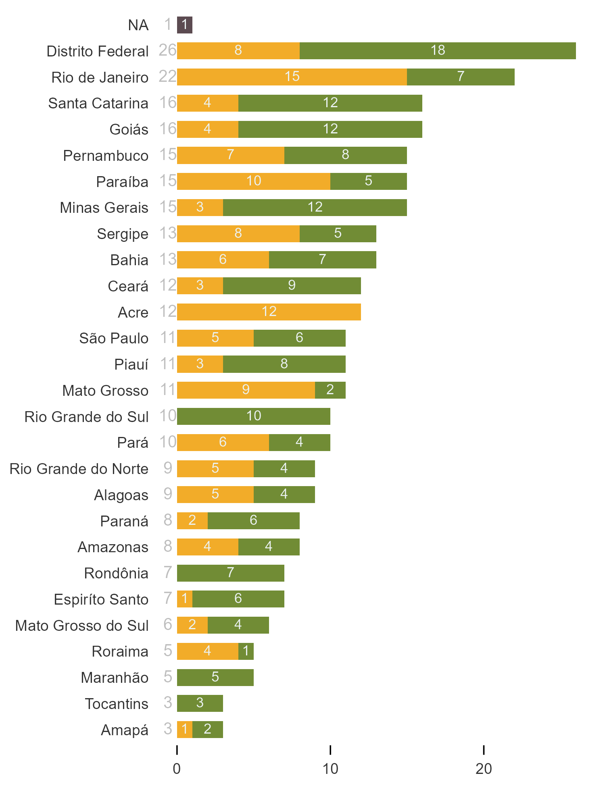
Em termos de dependência, o Estado do Rio de Janeiro apresenta o maior número de empresas dependentes (15), seguido pelo Acre (12). Já entre as empresas não dependentes, o Distrito Federal lidera o ranking com 18 empresas, seguido por Minas Gerais, Goiás e Santa Catarina, todos com 12.
Ao longo dos últimos quatro exercícios avaliados, a quantidade de estatais se manteve relativamente estável. Também não há mudanças relevantes na proporção de empresas dependentes e não dependentes, nem na situação das empresas, sejam elas ativas ou em liquidação.
Situação das Estatais
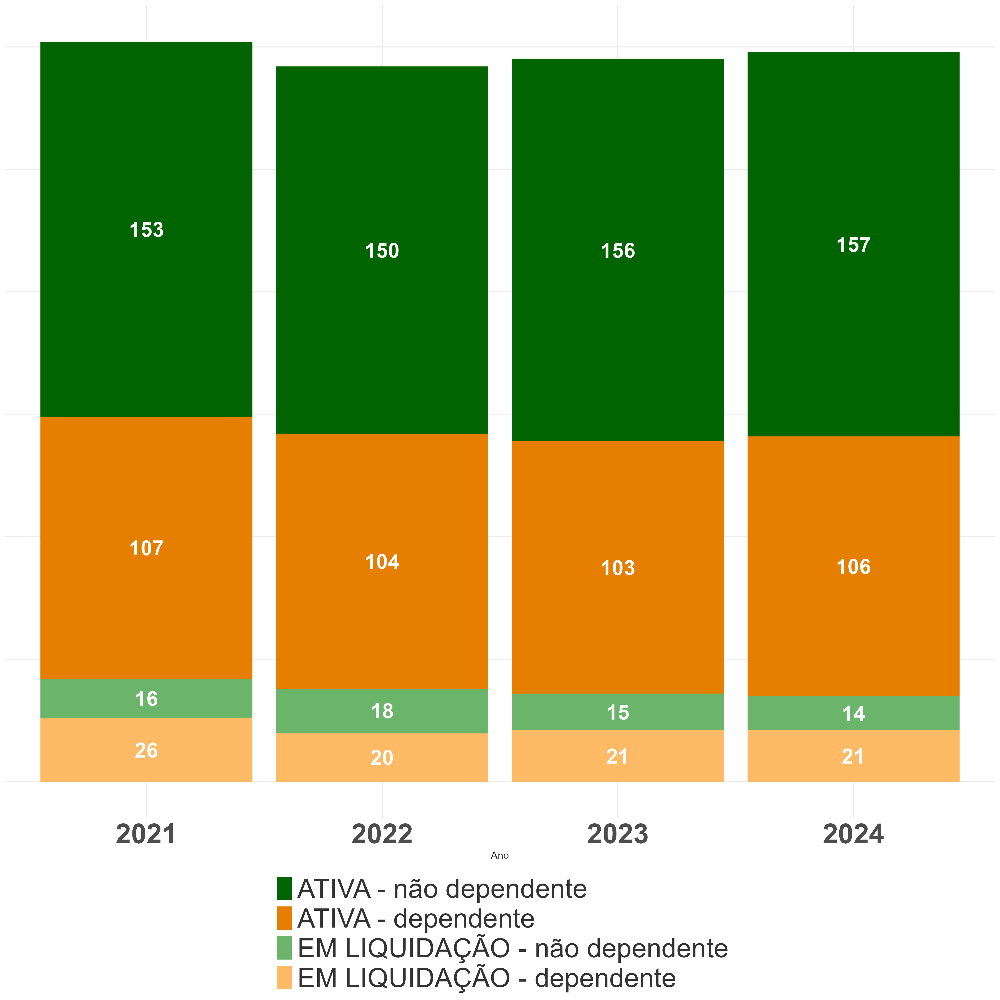
Ao examinar a quantidade de empresas controladas de acordo com os segmentos empresariais, observa-se que o setor financeiro, com 42 empresas, e o setor de desenvolvimento regional, com 29, são os que possuem o maior número de estatais, destacando-se como os de maior representatividade entre os Estados. Em 3º e 4º lugares estão os setores de saneamento, com 28 empresas, e de habitação e urbanização, com 24. Entre os segmentos com menor quantitativo de empresas, destacam-se os setores saúde e mineração, com 7 cada, além de turismo e comunicação, com 10 empresas cada.
Em relação ao critério de dependência, o setor de pesquisa e assistência técnica agropecuária mantém a liderança, pelo quarto exercício consecutivo, com o maior número de empresas dependentes (17), seguido pelos setores de habitação e urbanização e desenvolvimento regional (16 cada), e transporte (15). Por outro lado, no que tange às empresas não dependentes, o setor financeiro também se mantém estável no pódio, com 38 estatais nessa condição, seguido pelos setores de saneamento (22) e gás e derivados (16).
Quantidade de empresas por setor
- Dependentes
- Não Dependentes
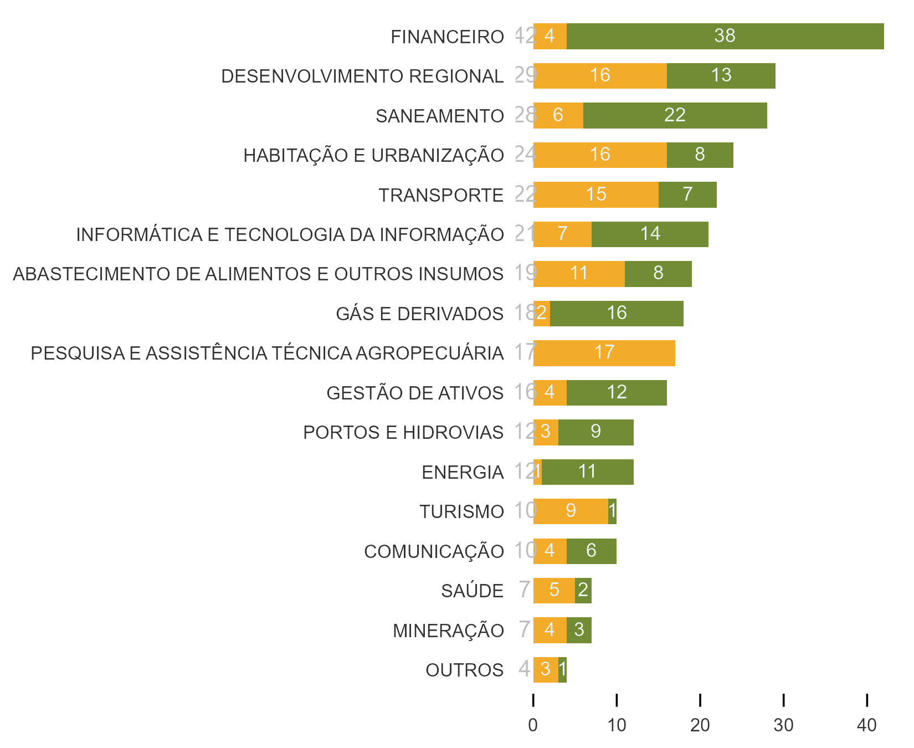
Abaixo, é possível selecionar um setor para exibir sua definição, bem como um mapa indicando os Estados que possuem empresas nessa área de atuação.
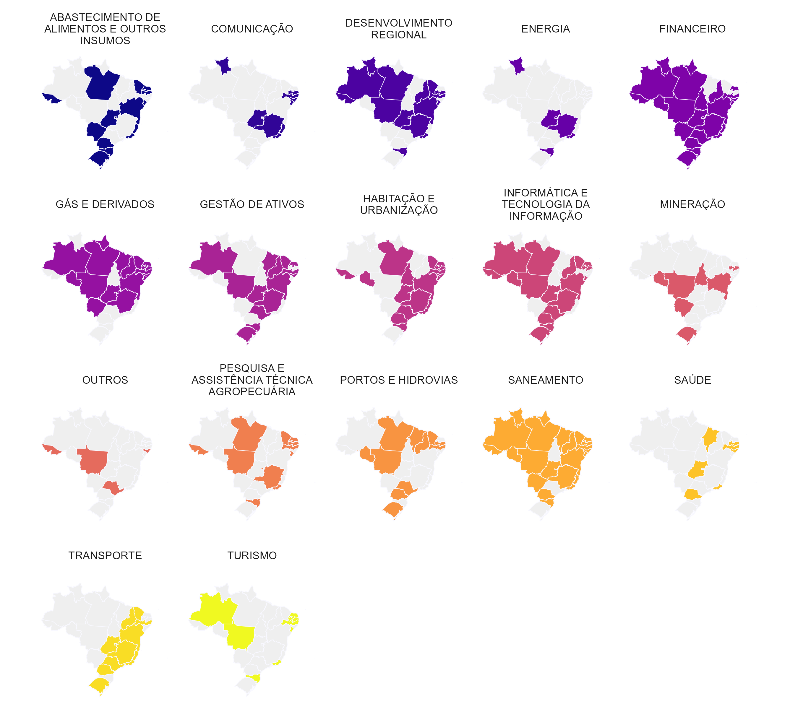
O Estado empreendedor
A atuação do Estado por meio de empresas estatais está prevista na Constituição Federal. Entretanto, essa atuação é tratada como exceção. Além disso, a fim de garantir o alcance do “relevante interesse coletivo”, a eficiência, a eficácia e a efetividade devem estar presentes na atuação das estatais.
Nesse contexto, é importante quantificar os lucros e prejuízos das empresas controladas pelos Estados, além de avaliar seu patamar de rentabilidade. O gráfico abaixo demonstra a distribuição dos resultados financeiros, evidenciando a diferença entre empresas dependentes e não dependentes.
Ao longo de 2024, os números revelam que 40% das estatais registraram prejuízo, uma proporção semelhante à dos três exercícios anteriores (38% em 2023, 40% em 2022 e 37% em 2021).
Ao analisar especificamente as empresas não dependentes, verifica-se que 29% apresentaram perdas financeiras. Esse percentual sobe para 56% quando se consideram apenas as estatais dependentes.
Distribuição das empresas em relação ao lucro ou prejuízo
- Empresas com Prejuízo
- Empresas com Lucro
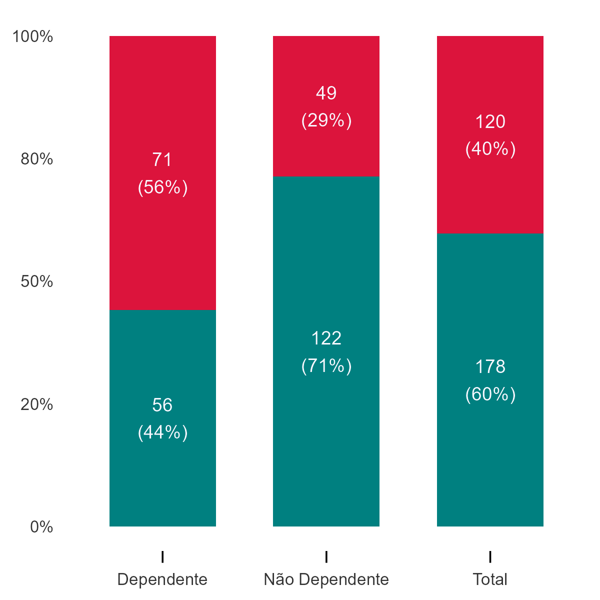
Conforme o gráfico abaixo, observa-se que, de 2021 a 2024, houve diminuição dos lucros e um aumento dos prejuízos das estatais, com o resultado total declinando de R$ 22,1 bilhões para R$ 12,5 bilhões.
Evolução de Lucros e Prejuízos
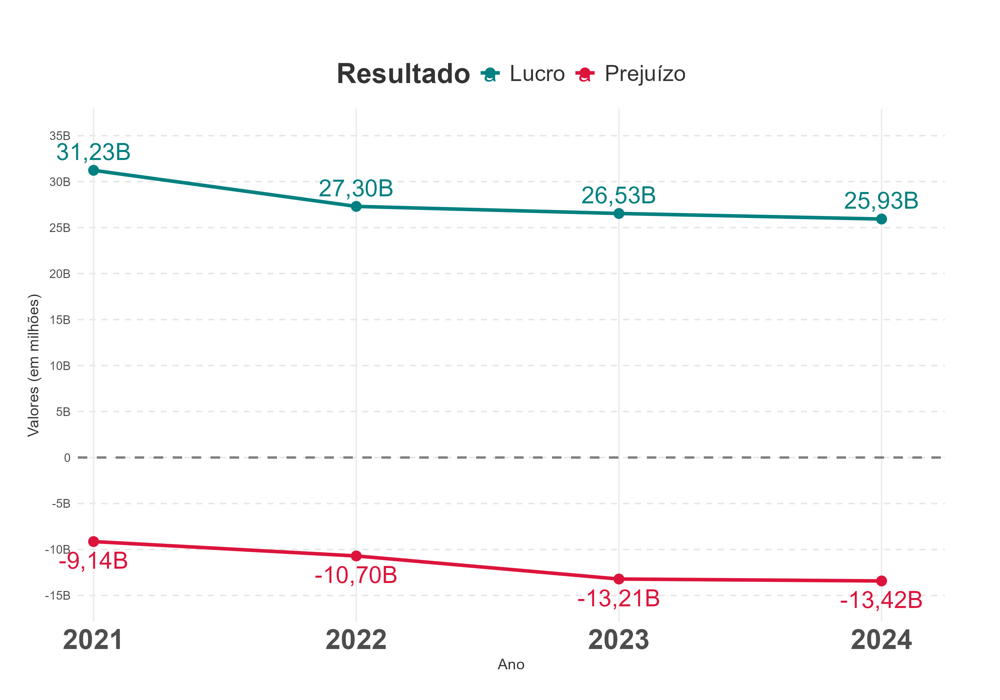
Em termos de segmento empresarial, o setor que apresentou o maior lucro no período foi o de energia, com R$ 8,2 bilhões. Na sequência, destaca-se o segmento de saneamento, com R$ 5,9 bilhões, seguido pelo setor financeiro, com R$ 2,7 bilhões. Por outro lado, o setor de transporte registrou o pior resultado, com prejuízo de R$ 1,9 bilhão. Em seguida, o segmento de habitação e urbanização apresentou perdas de aproximadamente R$ 1,3 bilhão.
Lucros e Prejuízos totais por setor de atuação
- Prejuízo
- Lucro
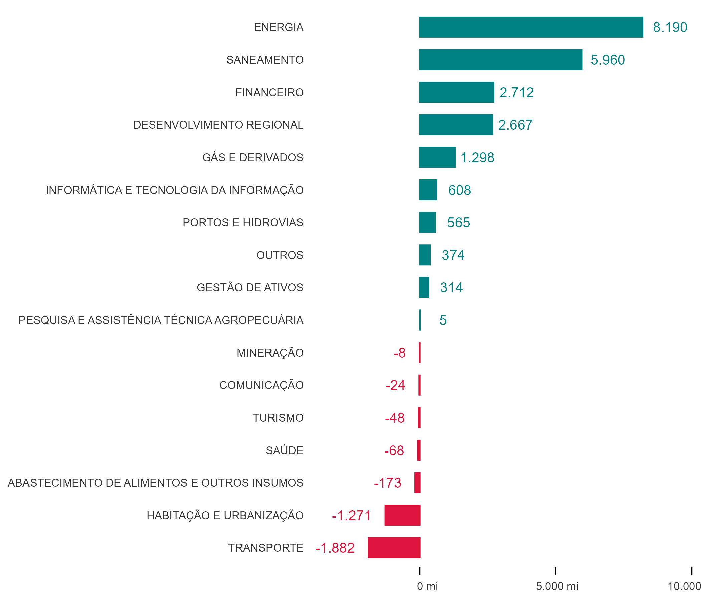
Observa-se que a proporção de estatais dependentes com rentabilidade negativa (57%) em 2024 diminuiu em relação ao exercício de 2023 (60%), mas continua maior do que a das estatais não dependentes (26%). Diversos fatores podem estar associados a esse resultado. O fato de as estatais dependentes apresentarem piores desempenhos pode indicar que, de modo geral, a gestão das não dependentes é mais eficiente. Contudo, outra explicação está no perfil das atividades desempenhadas: muitos setores de serviços essenciais são predominantemente dependentes e possuem finalidade orientada ao atendimento de políticas públicas, e não ao lucro.
Rentabilidade das Empresas
Rentabilidade definida como a razão entre lucro ou prejuízo e patrimônio líquido. As empresas são representadas por pontos, da seguinte forma:
● rentabilidade positiva ● rentabilidade negativa
Estão excluídas 62 empresas sem informação de lucro/prejuízo ou patrimônio líquido, ou que apresentaram patrimônio líquido menor ou igual a zero. Para uma melhor visualização, não está apresentada uma empresa para a qual o valor do indicador de rentabilidade ficou abaixo de -100%, e 2 empresas para quais o indicador de rentabilidade foi superior a +100%.
![Gráfico que mostra cada empresa como um ponto. Os pontos/empresas estãos dispostos verticalmente conforme a rentabilidade obtida em 2021, a partir do valor zero (quanto maior a rentabilidade, mais para o alto o ponto correspondente está; quanto menor, mais para baixo). Horizontalmente, os pontos que correspondem a empresas dependentes estão à esquerda, e os das empresas não dependentes estão à direita. As anotações do gráfico correspondem às informações que serão mencionadas no parágrafo seguinte ao gráfico.](./plots/plots_122025/roe2.png)
Ao se analisar as rentabilidades pelo critério de dependência e por segmentos empresariais, verifica-se que, entre as empresas dependentes, as do setor de portos e hidrovias apresentaram a maior média de rentabilidade em 2024, com 64%. Já entre as empresas não dependentes, destacam-se os setores de desenvolvimento regional, gás e derivados e energia, com rentabilidades médias de 56%, 29% e 25%, respectivamente.
Rentabilidade média das empresas por setor
Rentabilidade definida como a razão entre lucro ou prejuízo e patrimônio líquido. Estão excluídas 62 empresas sem informação de lucro/prejuízo ou patrimônio líquido, ou que apresentaram patrimônio líquido menor ou igual a zero. Para uma melhor visualização, não estão apresentadas empresas para as quais o valor do indicador de rentabilidade ficou abaixo de -100% e para as quais o indicador de rentabilidade foi superior a +100%.
- Média Dependentes
- Média Não Dependentes
![É um gráfico que busca ilustrar a rentabilidade agregada das empresas de cada setor, separando-se as empresas dependentes das não dependentes. Para cada setor, há um círculo que representa a rentabilidade média das empresas dependentes que atuam nesse setor, e outro círculo para a rentabilidade média das empresas não dependentes. Os círculos estão posicionados horizontalmente de forma que quanto maior a rentabilidade média, mais à direita o círculo está. Uma linha liga os dois círculos para ilustrar a diferença entre essas duas médias. Para a maioria dos setores, o círculo que corresponde à média de suas empresas não dependentes está à direita do círculo que representa a média das empresas dependentes, ou seja, para a maioria dos setores a rentabilidade média das não dependentes é superior às dependentes.](./plots/plots_122025/roe_dotplot.png)
O gráfico abaixo apresenta a evolução do patrimônio líquido total das estatais desde 2021, quando somava R$ 258,6 bilhões. Entre 2021 e 2022, observa-se um aumento de R$ 19,8 bilhões, alcançando R$ 278,4 bilhões. Já entre 2022 e 2023, houve uma redução de R$ 8,7 bilhões. A trajetória de queda se manteve em 2024, quando o patrimônio líquido total recuou para R$ 257,4 bilhões, retornando ao patamar próximo ao de 2021.
Evolução do Patrimônio Líquido Total
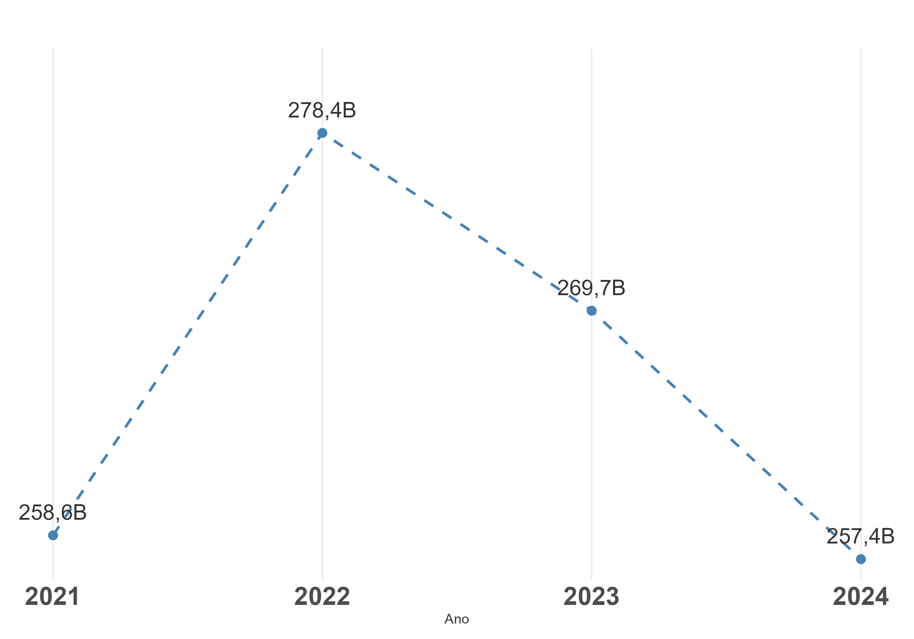
Pagamento de Participação nos Lucros
Os números indicam o percentual de empresas não dependentes de cada setor que pagaram PLR. Estão excluídas oito empresas para as quais não foram fornecidas as informações necessárias.
- Empresas que pagaram PLR
- Empresas que não pagaram PLR
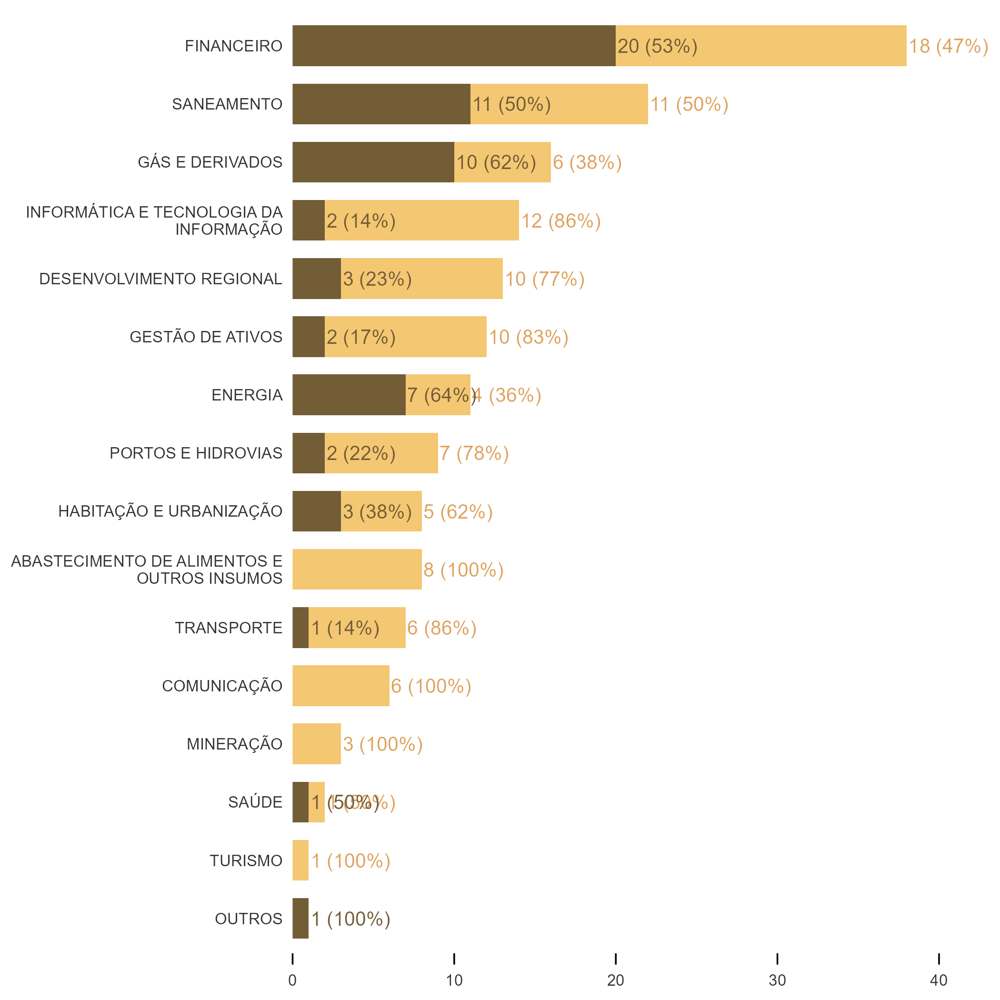
Considerando apenas as empresas não dependentes, 63 pagaram PLR (Participação nos Lucros e Resultados) ou RVA (Remuneração Variável Anual) no exercício de 2024. Os principais setores que realizaram pagamento de participação nos resultados foram: financeiro (18 empresas), saneamento (10 empresas) e gás e derivados (10 empresas).
O pagamento de PLR ou RVA para estatais federais é regulamentado pela CCE 10/1995, que não permite a distribuição de lucros caso a empresa tenha recebido recursos do Tesouro Nacional para pagamento de despesas correntes ou de capital — o que, por si só, impede a distribuição de lucros por estatais dependentes. O regulamento também veda a distribuição de lucros por empresas que apresentaram prejuízos em exercícios anteriores ainda não compensados por resultados posteriores. No entanto, essas regras não se aplicam às estatais estaduais, que seguem normativos próprios conforme o Estado. Para mais informações, consulte o Acórdão TCU 937/2019.
Foram identificadas três empresas que, apesar de terem registrado prejuízo em 2022 e 2023, efetuaram pagamento de PLR/RVA em 2024 sendo duas delas dependentes. Vale ressaltar que o Decreto nº 59.598/2013, do Estado de São Paulo, permite o pagamento de PLR mesmo para empresas dependentes ou que apresentem prejuízo no exercício, desde que atendidos alguns critérios, como a redução do grau de dependência e do montante do prejuízo.
Pagamento de Participação nos Lucros
Valores em R$
| UF | Estatal | Dependência | lucro/prejuízo Líquido 2023 | lucro/prejuízo Líquido 2024 |
|---|---|---|---|---|
| SP | COMPANHIA DE DESENVOLVIMENTO HABITACIONAL E URBANO DO ESTADO DE SÃO PAULO - CDHU | Não Dependente | -569.478.891,13 | -1.046.612.000,00 |
| SP | COMPANHIA PAULISTA DE TRENS METROPOLITANOS - CPTM | Dependente | -851.709.191,69 | -548.444.471,86 |
| SP | COMPANHIA DO METROPOLITANO DE SAO PAULO - METRÔ | Dependente | -900.175.857,05 | -347.519.070,47 |
Ao longo dos últimos 4 exercícios, a proporção de estatais brasileiras que pagaram PLR ou RVA não sofreu grande alteração, situando-se entre 65% e 75%.
Distribuição de PL por Ano
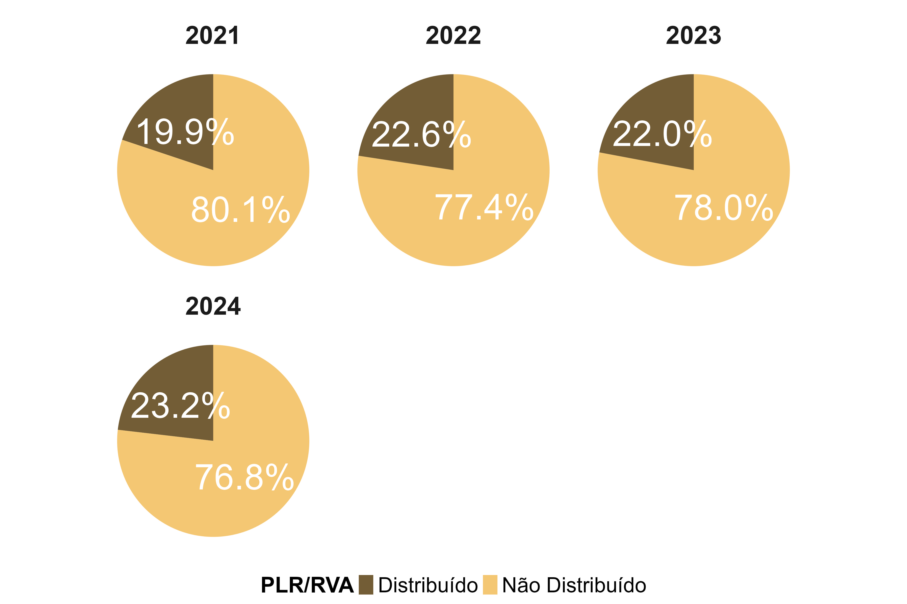
O Estado administrador
Estruturas de governança têm como objetivo principal coordenar a empresa no cumprimento de sua missão. Elas podem ser formadas por diferentes comitês ou conselhos que atuam em áreas específicas, contribuindo para apoiar a gestão no alcance dos resultados estratégicos.
Embora a presença de qualquer um desses colegiados já indique que a empresa possui algum nível de governança, a análise a seguir considerará como “estrutura de governança completa” apenas as estatais que possuam, simultaneamente, três instâncias: Conselho Fiscal, Conselho de Administração e Comitê de Auditoria. Esse parâmetro foi adotado porque Legislações específicas estabelecem a necessidade de tais órgãos conforme as características das estatais. Dessa forma, praticamente todas contam com pelo menos um deles.
A Lei 6.404/1976, por exemplo, que dispõe sobre as Sociedades por Ações, prevê a obrigatoriedade de Conselho Fiscal para toda S.A e de Conselho de Administração para toda S.A de capital aberto. A Lei 13.303/2016, por sua vez, prevê a constituição de Conselhos Fiscais, Comitê de Auditoria e Conselho de Administração.
Considerando-se as estatais não dependentes, 55% delas possuem as três estruturas de governança — Conselhos de Administração, Fiscal e Comitê de Auditoria. Entre as dependentes, essa proporção cai para apenas 14%. Observa-se, ainda, uma redução de 3 pontos percentuais em relação ao exercício anterior.
Distribuição de Estatais Não Dependentes por conselho (fiscal, administração e auditoria)
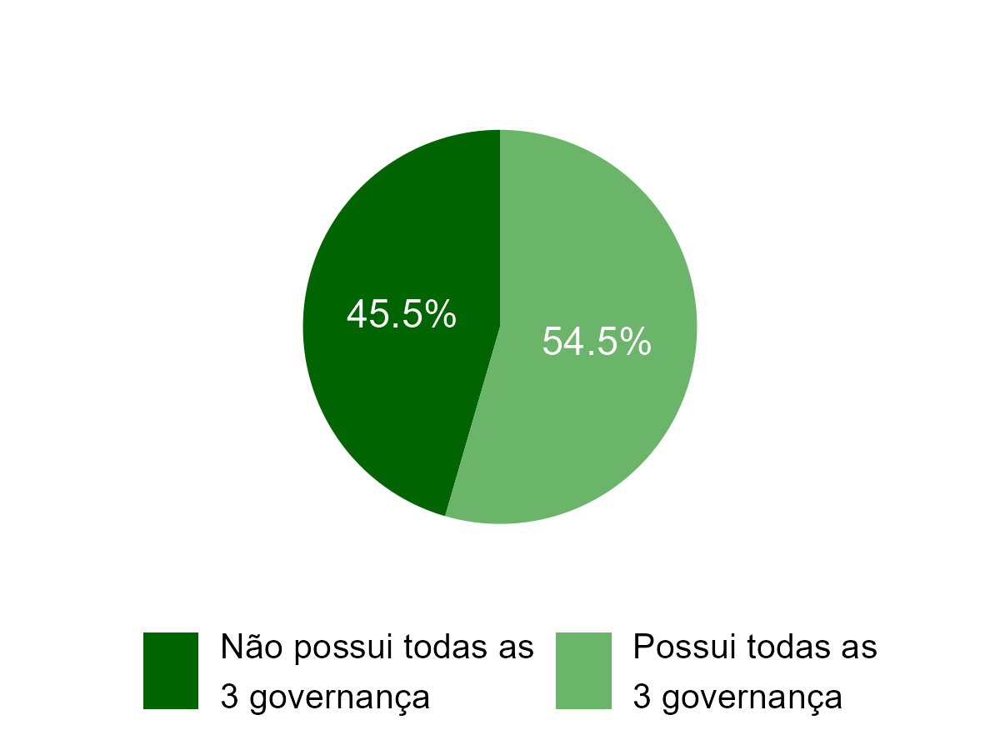
Distribuição de Estatais Dependentes por conselho (fiscal, administração e auditoria)
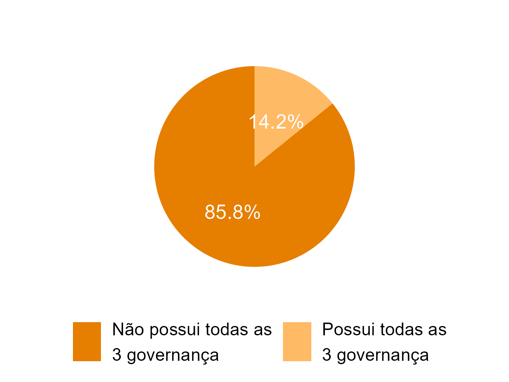
Entre as estatais não dependentes, os setores que mais se destacaram foram os mesmos do ano anterior e com níveis muito próximos: saúde (100%), saneamento (82%) e portos e hidrovias (78%). Esses segmentos continuam sendo aqueles com maior aderência ao critério de possuir as três estruturas de governança — Conselhos de Administração, Fiscal e Comitê de Auditoria.
No caso das estatais dependentes, os melhores desempenhos em 2024 foram observados nos setores de transporte (27%), comunicação e financeiro (25% cada). Empresas sem classificação definida constam como “outros setores”, que representam 33% das dependentes. Observa-se uma redução, em relação aos anos anteriores, na proporção de estatais dependentes com classificação setorial definida que possuem as três estruturas de governança, o que pode indicar possível enfraquecimento na adoção dessas práticas entre esse grupo.
Presença de estrutura de governança por setor
Percentuais das empresas que possuem estruturas de governança completas (Conselho de Administração, Conselho Fiscal e Comitê de Auditoria) por setor e por tipo de dependência.
- Dependentes
- Não Dependentes
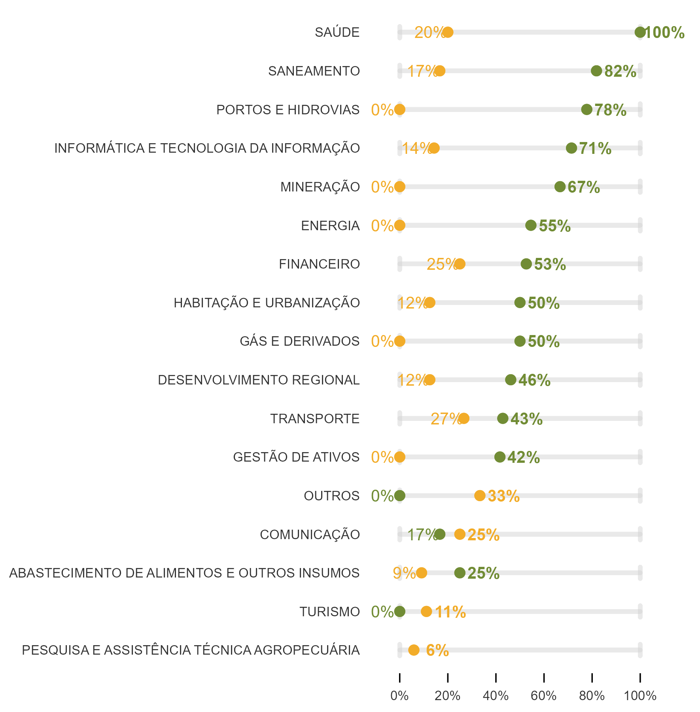
O gráfico abaixo evidencia que as empresas mais lucrativas são, em sua maioria, aquelas que dispõem das três estruturas de governança. Entre as estatais com estrutura completa, 75% apresentaram rentabilidade positiva, enquanto, entre as que não possuem esse arranjo, o percentual cai para 50%.
Estimativa de rentabilidade das empresas pelo critério de Governança
Rentabilidade definida como a razão entre lucro ou prejuízo e patrimônio líquido. As empresas são representadas por pontos, da seguinte forma:
● rentabilidade positiva ● rentabilidade negativa
Estão excluídas 62 empresas sem informação de lucro/prejuízo ou patrimônio líquido, ou que apresentaram patrimônio líquido menor ou igual a zero. Para uma melhor visualização, não estão apresentadas empresas para a qual o valor do indicador de rentabilidade ficou abaixo de -100% e para as quais o indicador de rentabilidade foi superior a +100%.
![Gráfico que mostra cada empresa como um ponto. Os pontos/empresas estãos dispostos verticalmente conforme a rentabilidade obtida em 2021, a partir do valor zero (quanto maior a rentabilidade, mais para o alto o ponto correspondente está; quanto menor, mais para baixo). Horizontalmente, os pontos que correspondem a empresas que não possuem estrutura de governaça completa estão à esquerda, e os das empresas que possuem estrutura completa estão à direita. As anotações do gráfico correspondem às informações que foram mencionadas no parágrafo anterior ao gráfico: 83% das empresas que possuem estrutura de governança completa apresentaram rentabilidade positiva, enquanto entre as que não possuem esse percentual é de 55%.](./plots/plots_122025/roe_gov.png)
A Lei 13.303/2016, em seu artigo 8º, também estabelece a obrigatoriedade de publicação das cartas anuais de políticas públicas e governança corporativa pelas estatais. O dispositivo determina:
“Elaboração de carta anual, subscrita pelos membros do Conselho de Administração, com a explicitação dos compromissos de consecução de objetivos de políticas públicas pela empresa pública, pela sociedade de economia mista e por suas subsidiárias, em atendimento ao interesse coletivo ou ao imperativo de segurança nacional que justificou a autorização para suas respectivas criações, com definição clara dos recursos a serem empregados para esse fim, bem como dos impactos econômico-financeiros da consecução desses objetivos, mensuráveis por meio de indicadores objetivos;”
A Lei também exige que essa carta seja amplamente divulgada e redigida em linguagem clara e direta. Ao estabelecer essa obrigação, busca-se garantir que a sociedade possa acompanhar as ações das estatais, avaliar seu atendimento ao interesse coletivo e monitorar o cumprimento das políticas públicas. Dessa forma, o cidadão passa a atuar como um agente complementar na estrutura de governança da empresa estatal.
O Estado acionista
Quais os resultados das empresas para o Estado Acionista?
Há uma relação financeira entres os Estados e suas estatais que se dá, sobretudo, por meio de:
▲ Dividendos — recursos, decorrentes de uma parte do lucro apurado, que as estatais transferem para o Estado.
▼ Subvenções e Aumento de Capital — recursos que os Estados transferem para as empresas.
Quando os Estados recebem, em dividendos, valores superiores aos que desembolsam em subvenções ou aumento de capital, as estatais passam a contribuir positivamente para o resultado fiscal. Por outro lado, quando as transferências realizadas pelos entes superam as receitas provenientes das empresas, entende-se que elas representam um ônus para as contas públicas.
O mapa abaixo mostra, em termos agregados, o resultado líquido (entradas menos saídas) dos Estados nas suas relações com as estatais estaduais. Em 2024, os Estados que receberam mais recursos das estatais do que transferiram foram Minas Gerais e Espírito Santo.
Resultado Líquido das Empresas para o Estado Acionista
![Mapa do Brasil com Estados coloridos conforme o valor do resultado líquido das empresas do Estado. Como mencionado no texto, em 2021, os únicos Estados que receberam mais recursos das estatais do que transferiram foram Alagoas, Espírito Santo, Minas Gerais, Paraná e Rio Grande do Sul. Esses Estados estão coloridos em gradações da cor azul. Os demais Estados, que transferiram mais recursos do que receberam das suas estatais, estão coloridos em gradações da cor vermelha. Quanto mais azul ou mais vermelho, maior o valor do 'lucro' ou do 'prejuízo' do Estado com suas estatais.](./plots/plots_122025/mapa_result.png)
Em 2024, de forma geral, os Estados transferiram R$ 11,3 bilhões em reforço de capital e R$ 12,4 bilhões em subvenções, enquanto receberam R$ 5,3 bilhões em dividendos. O saldo líquido desses fluxos correspondeu a R$ 18,4 bilhões em repasses das administrações estaduais para suas estatais.
Um ponto relevante é que, além dos recursos transferidos pelos Estados às estatais na forma de aportes de capital e subvenções, em 2024 os Estados também assumiram R$ 2,7 bilhões em passivos dessas empresas.
Cabe destacar ainda que as estatais não dependentes receberam R$ 0,4 bilhão em subvenções e R$ 6 bilhões em aportes de capital — tema que será detalhado na próxima seção.
No caso das estatais dependentes, nenhuma repassou dividendos aos Estados. Por outro lado, os Estados destinaram R$ 12 bilhões em subvenções e R$ 5,3 bilhões em reforços de capital para essas empresas.
Resultado Líquido das Empresas para o Estado Acionista — dependentes e não dependentes
Valores em R$ milhões
![Gráfico do tipo waterfall que mostra a composição do resultado líquido agregado das empresas dependentes e das não dependentes. A metade esquerda do gráfico representa os valores para as empresas dependentes, e a metade direita, os das empresas não dependentes. Em cada lado, parte-se de uma linha horizontal que representa o valor de resultado igual a 0. A partir dessa linha, traça-se um segmento de reta vertical que representa o valor dos dividendos totais recebidos pelas empresas. Como a contribuição dos dividendos para o resultado é positiva, esse segmento parte verticalmente do zero para cima, com tamanho correspondente ao seu valor (R$ 0 milhões para as dependentes, R$ 4.494 milhões para as não dependentes). Em seguida, ao lado desse segmento, mostra-se a contribuição das Subvenções para o resultado. Como esse contribuição é negativa (pois é um valor desembolsado pelo ente), o novo segmento parte do topo do segmento dos dividendos para baixo. Da mesma forma, um novo segmento é mostrado, representando os Reforços de Capital recebidos. Também por contribuírem negativamente para o resultado, o segmento parte do valor final do segmento anterior (subvenções) para baixo. Finalmente, uma barra vertical partindo da linha que representa o zero até a posicão final do segmento das subvenções. Essa barra corresponde então ao resultado líquido para o ente acionista, pois representa a soma algébrica dos valores dos dividendos (positivos), subvenções (negativos) e reforços de capital (negativos).](./plots/plots_122025/waterfall.png)
Indícios de Dependência
O que caracteriza uma estatal como dependente?
Segundo a Lei de Responsabilidade Fiscal (LRF), uma estatal dependente é uma empresa controlada que recebe recursos financeiros do ente controlador para o pagamento de despesas com pessoal, custeio em geral ou de capital, excluídos, no último caso, aqueles provenientes de aumento de participação acionária.
Indícios de dependência: quando a empresa estatal, embora classificada como não dependente pelo ente, apresenta sinais de necessidade potencial de apoio financeiro — como prejuízos recorrentes, patrimônio líquido reduzido ou baixa geração de caixa — o ente deve reavaliar a classificação e, se mantê-la, apresentar fundamentos que justifiquem sua adequação.
Conforme mencionado nas edições anteriores, entre 2021 e 2022 houve um aumento de 20% nos aportes realizados pelos Estados a título de subvenções para estatais estaduais, que passaram de R$ 10 bilhões para R$ 12 bilhões. Em 2023, o valor recuou para R$ 11,5 bilhões e voltou a crescer em 2024, alcançando R$ 12,4 bilhões.
Em 2024, o montante aportado pelos entes às suas empresas foi distribuído entre 108 estatais. Dentre elas, cinco foram classificadas como não dependentes — sendo três em processo de liquidação — e concentraram R$ 233 milhões do total, valor cerca de 87,5% inferior à média dos três exercícios anteriores (R$ 1,5 bilhão em 2023, R$ 1,9 bilhão em 2022 e R$ 2,2 bilhões em 2021).
Empresas estatais não dependentes que declararam ter recebido subvenções em 2024
Valores em R$
| UF | Estatal | Situação | Subvenções Recebidas do Tesouro Estadual em 2022 | Subvenções Recebidas do Tesouro Estadual em 2023 | Subvenções Recebidas do Tesouro Estadual em 2024 |
|---|---|---|---|---|---|
| GO | Empresa Estadual de Processamento de Dados de Goiás | EM LIQUIDAÇÃO | 3.095.445,01 | 3.673.590,97 | 2.609.145,86 |
| PI | Águas e Esgotos do Piauí SA | ATIVA | 107.361.110,00 | 786.512.172,00 | 198.060.292,17 |
| RJ | Centrais Elétricas Fluminenses S.A. CELF - em liquidação ordinária | EM LIQUIDAÇÃO | 676,00 | 720,00 | 754,00 |
| RO | Companhia de Água e Esgoto de Rondônia- CAERD | ATIVA | - | - | 14.962.421,49 |
| RS | Companhia Estadual de Silos e Armazéns - CESA | EM LIQUIDAÇÃO | 62.517.065,88 | 19.200.000,00 | 17.000.000,00 |
A partir da análise dos dados disponíveis, não é possível afirmar se os casos são de dependência estrutural ou transitória. No entanto, apenas uma dessas estatais não dependentes não havia recebido subvenção nos dois exercícios anteriores, o que pode reforçar os indícios de dependência. Vale destacar que, conforme a Lei 4.320/1964, subvenções são transferências destinadas a cobrir despesas de custeio, o que caracterizaria a dependência de acordo com a LRF.
Além disso, uma empresa, um fundo e uma fundação passaram por reclassificação de dependência na análise fiscal realizada pela Secretaria do Tesouro Nacional, em âmbito do Programa de Ajuste Fiscal (PAF) – para saber mais sobre o PAF acesse aqui. Esses são casos em que o ente considera a entidade como não dependente, mas há alguma orientação de órgão de controle para reenquadramento. Ressalta-se que a empresa Companhia Cearense de Transportes Metropolitanos - METROFOR e a Fundação Estatal de Atenção em Saúde do Estado do Paraná - FUNEAS já haviam sido enquadradas nos critérios de indícios de dependência realizados pela STN.
Empresas estatais reclassificadas para dependentes - PAF 2025 (exercício de 2024)
| UF | Estatal |
|---|---|
| CE | Companhia Cearense de Transportes Metropolitanos - METROFOR |
| PR | Fundação Estatal de Atenção em Saúde do Estado do Paraná - FUNEAS |
| PR | Fundo Estadual de Desenvolvimento Urbano - FDU |